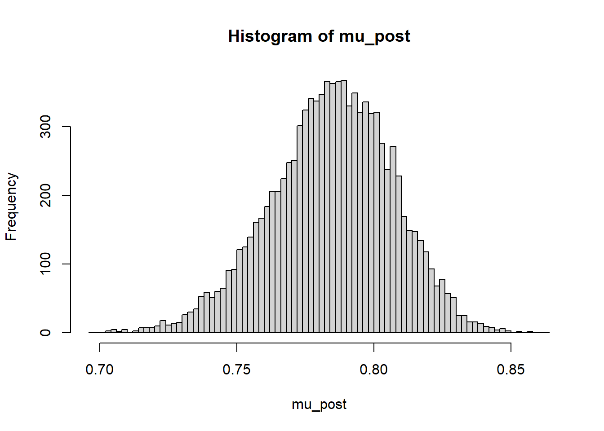
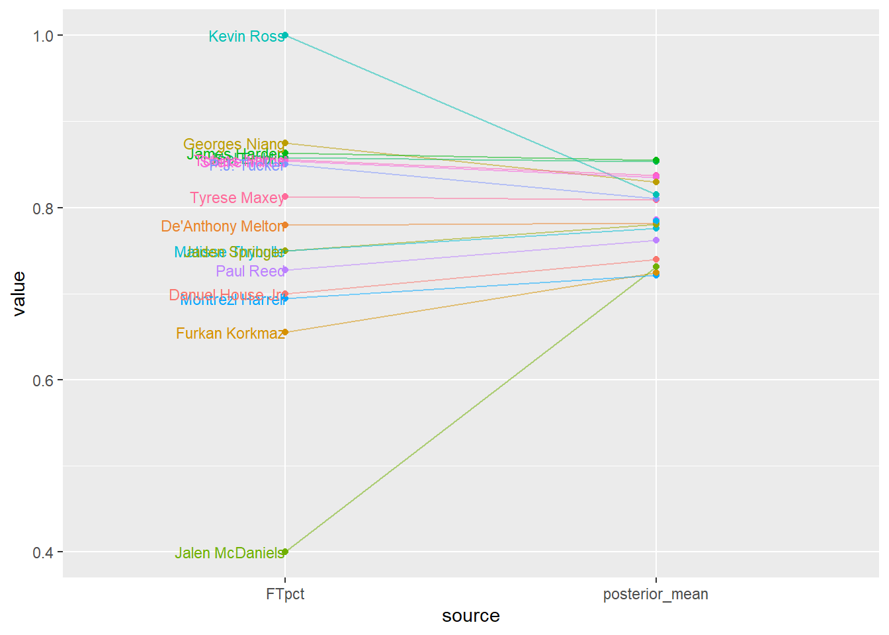
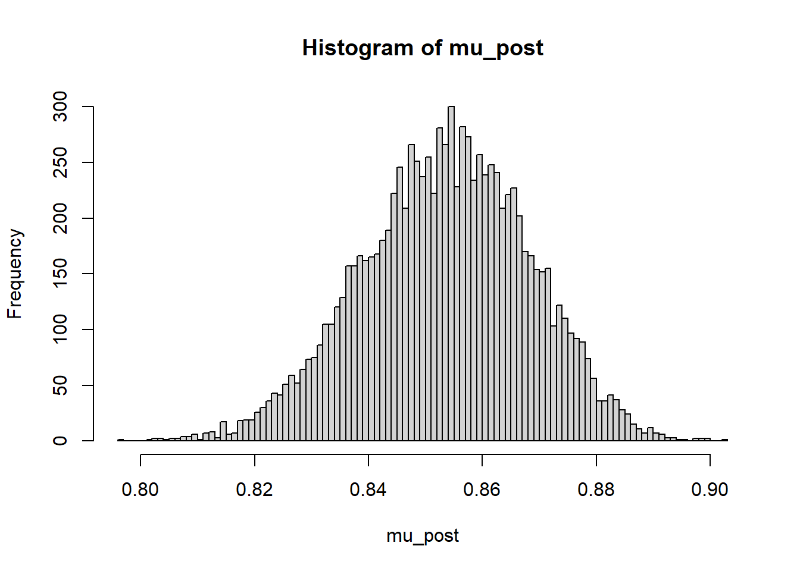
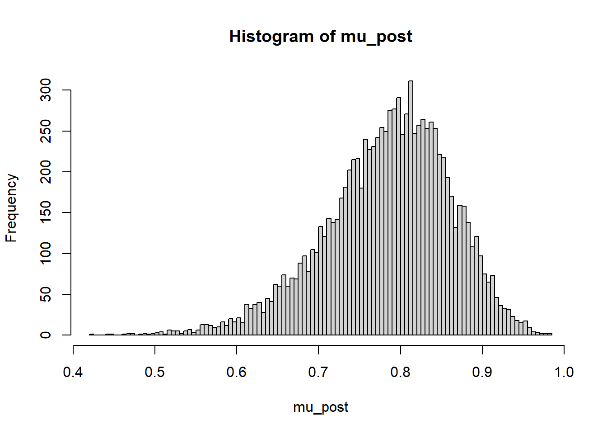

data = read_csv("sixers.csv") |>
rename(FTpct = "FT%") |>
arrange(desc(FTA))24 Introduction to Bayesian Hierarchical Models
In a Bayesian hierarchical1 model, the model for the data depends on certain parameters, and those parameters in turn depend on other parameters. Hierarchical modeling provides a framework for building complex and high-dimensional models from simple and low-dimensional building blocks.
Suppose we want to estimate the true, long run free throw percentage for a subset of NBA players2. That is, we want to estimate each player’s true probability of successfully scoring on any free throw attempt. We’ll consider data from games in the 2022-2023 NBA season for players who were on the Philadelpha 76ers obtained from basketball-reference as of Feb 27, summarized in Section 24.1.1.
Example 24.1 Let \(\theta_j\) denote player \(j\)’s true (long run) FT percentage; for example, \(\theta_{\text{Embiid}}\), \(\theta_{\text{Harden}}\), etc. Let \(n_j\) denote the number of free throw attempts and \(y_j\) the number of free throws made for player \(j\).
One way to estimate \(\theta_j\) is to pool all the data together. Over the 19 players in the data set, there are 1482 attempts, of which 1229 were successful, for an overall free throw percentage of 82.9%. The sample mean free throw percentage, among players with nonzero attempts, is 77.7%. So we could just estimate each \(\theta_j\) with the overall free throw percentage (or the sample mean free throw percentage). What are some issues with this approach?
At the other extreme, we could estimate \(\theta_j\) using just the attempts for player \(j\). For example, use only the attempts for Embiid to estimate \(\theta_{\text{Embiid}}\), only the attempts for Harden to estimate \(\theta_{\text{Harden}}\), etc. What are some issues with this approach? (Hint: consider the players with no attempts, or few attempts.)
In a Bayesian model, the \(\theta_j\)’s would have a prior distribution. We could assume a Bayesian model with a prior in which all \(\theta_j\) are independent. What are some issues with this approach?
Example 24.2 Let’s first consider just a single player with true (long run) free throw percentage \(\theta\). Given \(n\) independent attempts, conditional on \(\theta\), we might assume that \(y\) follows a Binomial(\(n, \theta\)) distribution.
If we imagine the player is randomly selected from among current NBA players, how might we interpret the prior distribution for \(\theta\)? Note: this question is mixing some Bayesian and frequentist ideas, but the purpose is to help intuition.
The prior distribution for \(\theta\) has a prior mean; let’s denote it \(\mu\). How might we interpret \(\mu\)?
The prior mean \(\mu\) is also a parameter, so we could place a prior distribution on it. What would the prior distribution on \(\mu\) represent?
The prior distribution for \(\theta\) has a prior standard deviation; let’s denote it \(\sigma\). How might we interpret \(\sigma\)?
The prior standard deviation \(\sigma\) is also a parameter, so we could place a prior distribution on it. What would the prior distribution on \(\sigma\) represent?
In this model \(\mu\) and \(\theta\) are dependent. Why is this dependence useful? (Hint: consider another player.)
- A Bayesian hierarchical model consists of the following layers in the hierarchy.
- A model for the data \(y\) which depends on model parameters \(\theta\) and determines the likelihood \(f(y|\theta)\).
- The model usually involves multiple parameters. Generically, \(\theta\) represents a vector of parameters that show up in the likelihood function.
- Remember: While the likelihood for a particular \(y\) sample is computed by evaulating the conditional density of \(y\) given \(\theta\), the likelihood function is a function of \(\theta\), treating the data \(y\) as fixed.
- A (joint) prior distribution for the model parameters \(\theta\), denoted \(\pi(\theta|\phi)\), which depends on hyperparameters \(\phi\).
- A hyperprior distribution, i.e., a prior distribution for the hyperparameters, denoted \(\pi(\phi)\). (Again, \(\phi\) generically represents a vector of hyperparameters.)
- A model for the data \(y\) which depends on model parameters \(\theta\) and determines the likelihood \(f(y|\theta)\).
- The above specification implicitly assumes that the data distribution and likelihood function only depend on \(\theta\); the hyperparameters only affect \(y\) through \(\theta\). That is, the general hierarchical model above assumes that the data \(y\) and hyperparameters \(\phi\) are conditionally independent given the model parameters \(\theta\), so the likelihood satisfies \[ f(y|\theta, \phi) = f(y|\theta) \] The joint prior distribution on parameters and hyperparameters is \[ \pi(\theta, \phi) = \pi(\theta|\phi)\pi(\phi) \]
- Given the observed data \(y\), we find the joint posterior density of the parameters and hyperparameters, denoted \(\pi(\theta, \phi|y)\), using Bayes rule: posterior \(\propto\) likelihood \(\times\) prior. \[\begin{align*} \pi(\theta, \phi|y) & \propto f(y|\theta, \phi)\pi(\theta, \phi)\\ & \propto f(y|\theta)\pi(\theta|\phi)\pi(\phi) \end{align*}\]
- In Bayesian hierarchical models, there will generally be implied dependence between parameters. But dependence among parameters is actually useful for several reasons:
- The dependence is natural and meaningful in the problem context.
- If parameters are dependent, then all data can inform parameter estimates.
Example 24.3 Now suppose want to estimate the free throw percentages for \(J\) NBA players, given data consisting of the number of free throws attempted \(n_j\) and made \(y_j\) by player \(j\). Specify a hierarchical model, including your choice of prior distribution. How many parameters are there in the model?
Example 24.4 Use software to fit the Bayesian model using the 76ers data. Summarize the posterior distribution of \(\mu\).
Example 24.5 For each player \(j\), consider the posterior mean and posterior SD of \(\theta_j\).
What is the posterior mean of \(\theta_j\) for players with no attempts? Why does this make sense?
Why is the posterior mean of \(\theta_j\) not the same for players with no attempts?
For which players is the posterior mean closest to the observed free throw percentage? Why?
Which players have the smallest posterior SDs? Why?
Find and interpret 50%, 80%, and 98% posterior credible intervals for Joel Embiid.
Find and interpret 50%, 80%, and 98% posterior credible intervals for Kevin Ross.
24.1 Notes
24.1.1 Sample data
data |>
select(Player, FTA, FT, FTpct) |>
kbl() |>
kable_styling()| Player | FTA | FT | FTpct |
|---|---|---|---|
| Joel Embiid | 556 | 477 | 0.858 |
| James Harden | 279 | 241 | 0.864 |
| Tyrese Maxey | 155 | 126 | 0.813 |
| Tobias Harris | 90 | 77 | 0.856 |
| Shake Milton | 89 | 76 | 0.854 |
| Montrezl Harrell | 85 | 59 | 0.694 |
| De'Anthony Melton | 59 | 46 | 0.780 |
| Danuel House Jr. | 40 | 28 | 0.700 |
| Georges Niang | 32 | 28 | 0.875 |
| Furkan Korkmaz | 29 | 19 | 0.655 |
| Paul Reed | 22 | 16 | 0.727 |
| P.J. Tucker | 20 | 17 | 0.850 |
| Matisse Thybulle | 12 | 9 | 0.750 |
| Jalen McDaniels | 5 | 2 | 0.400 |
| Kevin Ross | 5 | 5 | 1.000 |
| Jaden Springer | 4 | 3 | 0.750 |
| Saben Lee | 0 | 0 | NA |
| Julian Champagnie | 0 | 0 | NA |
| Michael Foster Jr. | 0 | 0 | NA |
24.1.2 Approximating the posterior distribution
brms is structured around linear models. In the situation of this example, brms wants to fit a logistic regression model. Rather than doing that, I used another software program, JAGS, to fit our current model. Don’t worry about the syntax. Just notice that the inputs are: (1) the data, (2) the model for the data which determines the likelihood (dbinom), and (3) the prior (dbeta) and hyperprior (dnorm). And the output is an approximation of the posterior distribution of the parameters.
library(rjags)Loading required package: codaLinked to JAGS 4.3.2Loaded modules: basemod,bugsplayer = data$Player
y = data$FT
n = data$FTA
J = length(y)
# specify the model: likelihood, prior, hyperprior
model_string <- "model{
# Likelihood
for (j in 1:J){
y[j] ~ dbinom(theta[j], n[j])
}
# Prior Beta(alpha, beta)
# We put hyperpriors on the mean mu and the SD sigma,
# So we need to convert to shape parameters alpha and beta
for (j in 1:J){
theta[j] ~ dbeta(mu * (mu * (1 - mu) / sigma ^ 2 - 1), (1 - mu) * (mu * (1 - mu) / sigma ^ 2 - 1))
}
# Hyperprior, phi=(mu, sigma)
# In JAGS the second parameter of dnorm is precision = 1 / SD ^ 2
mu ~ dnorm(0.75, 1 / 0.05 ^ 2)
sigma ~ dnorm(0.08, 1 / 0.02 ^ 2)
}"
dataList = list(y = y, n = n, J = J)
model <- jags.model(file = textConnection(model_string), data = dataList)Compiling model graph
Resolving undeclared variables
Allocating nodes
Graph information:
Observed stochastic nodes: 19
Unobserved stochastic nodes: 21
Total graph size: 77
Initializing modelupdate(model, n.iter = 1000)
posterior_sample <- coda.samples(
model,
variable.names = c("theta", "mu", "sigma"),
n.iter = 10000,
n.chains = 5
)head(posterior_sample)[[1]]
Markov Chain Monte Carlo (MCMC) output:
Start = 2001
End = 2007
Thinning interval = 1
mu sigma theta[1] theta[2] theta[3] theta[4] theta[5]
[1,] 0.7555775 0.07921928 0.8386526 0.8604243 0.8459893 0.8305631 0.8566181
[2,] 0.7635775 0.07592569 0.8421768 0.8344470 0.8379428 0.8358840 0.7914917
[3,] 0.7941961 0.05011713 0.8583107 0.8662174 0.7612669 0.7809876 0.7915956
[4,] 0.7989662 0.05002902 0.8377143 0.8705762 0.7654653 0.8459553 0.8209893
[5,] 0.7779216 0.05031916 0.8408643 0.8275125 0.8397971 0.8501741 0.8471134
[6,] 0.8048253 0.06595677 0.8323730 0.8350123 0.7903869 0.8638214 0.8410987
[7,] 0.7730351 0.06125558 0.8450267 0.8127273 0.8257063 0.8101122 0.8126974
theta[6] theta[7] theta[8] theta[9] theta[10] theta[11] theta[12]
[1,] 0.7549757 0.7957334 0.7786578 0.7731625 0.6034847 0.6941081 0.8628986
[2,] 0.7157952 0.7844823 0.7959441 0.7920538 0.7963032 0.7191708 0.6872611
[3,] 0.6919166 0.7748574 0.8027660 0.8791182 0.7964528 0.7400872 0.7857784
[4,] 0.7197988 0.7324170 0.7599206 0.8804523 0.7670851 0.8114943 0.7926496
[5,] 0.7794976 0.7750168 0.7541935 0.7850362 0.7660546 0.8242620 0.7634910
[6,] 0.7233923 0.7613264 0.7936800 0.8206385 0.7269181 0.8468743 0.8270834
[7,] 0.7289698 0.8405265 0.7535754 0.8195994 0.8004007 0.7627584 0.8380063
theta[13] theta[14] theta[15] theta[16] theta[17] theta[18] theta[19]
[1,] 0.7354283 0.7169208 0.7770684 0.7209018 0.7269951 0.6807398 0.7411504
[2,] 0.7738776 0.6940222 0.8051911 0.8017877 0.7412862 0.6678919 0.6426935
[3,] 0.6450965 0.7615708 0.8293455 0.8050397 0.8359435 0.8730834 0.6285403
[4,] 0.7105079 0.7408502 0.9158065 0.7691811 0.8058121 0.7204509 0.8776500
[5,] 0.8022695 0.7410960 0.7714884 0.7512273 0.8003665 0.8625337 0.8246577
[6,] 0.8749640 0.6703499 0.8025530 0.6888582 0.8080648 0.8215120 0.7283967
[7,] 0.7243932 0.8028349 0.8294274 0.8135558 0.6821205 0.8217222 0.7475864
attr(,"class")
[1] "mcmc.list"summary(posterior_sample)
Iterations = 2001:12000
Thinning interval = 1
Number of chains = 1
Sample size per chain = 10000
1. Empirical mean and standard deviation for each variable,
plus standard error of the mean:
Mean SD Naive SE Time-series SE
mu 0.78462 0.02239 0.0002239 0.0005344
sigma 0.07224 0.01640 0.0001640 0.0004475
theta[1] 0.85344 0.01471 0.0001471 0.0001914
theta[2] 0.85488 0.02044 0.0002044 0.0002715
theta[3] 0.80852 0.02856 0.0002856 0.0003686
theta[4] 0.83700 0.03369 0.0003369 0.0004635
theta[5] 0.83510 0.03422 0.0003422 0.0004693
theta[6] 0.72169 0.04233 0.0004233 0.0006600
theta[7] 0.78174 0.04345 0.0004345 0.0005841
theta[8] 0.74000 0.05274 0.0005274 0.0008511
theta[9] 0.82979 0.04740 0.0004740 0.0007376
theta[10] 0.72421 0.06060 0.0006060 0.0010033
theta[11] 0.76172 0.06047 0.0006047 0.0009083
theta[12] 0.81025 0.05542 0.0005542 0.0008105
theta[13] 0.77596 0.06448 0.0006448 0.0009524
theta[14] 0.73109 0.07919 0.0007919 0.0013652
theta[15] 0.81509 0.06761 0.0006761 0.0010764
theta[16] 0.78029 0.07233 0.0007233 0.0011276
theta[17] 0.78577 0.07737 0.0007737 0.0012249
theta[18] 0.78467 0.07906 0.0007906 0.0013443
theta[19] 0.78440 0.07680 0.0007680 0.0011530
2. Quantiles for each variable:
2.5% 25% 50% 75% 97.5%
mu 0.73778 0.77039 0.78555 0.80015 0.8258
sigma 0.04155 0.06092 0.07179 0.08318 0.1053
theta[1] 0.82362 0.84363 0.85392 0.86383 0.8807
theta[2] 0.81319 0.84137 0.85566 0.86916 0.8932
theta[3] 0.74957 0.78999 0.80954 0.82842 0.8620
theta[4] 0.76735 0.81493 0.83818 0.86056 0.8991
theta[5] 0.76261 0.81290 0.83680 0.85912 0.8969
theta[6] 0.63494 0.69356 0.72345 0.75118 0.7999
theta[7] 0.69077 0.75435 0.78405 0.81212 0.8602
theta[8] 0.62747 0.70624 0.74382 0.77779 0.8330
theta[9] 0.72851 0.80008 0.83235 0.86263 0.9149
theta[10] 0.59512 0.68499 0.72851 0.76673 0.8325
theta[11] 0.63234 0.72418 0.76596 0.80374 0.8659
theta[12] 0.69288 0.77511 0.81389 0.84921 0.9085
theta[13] 0.63554 0.73544 0.78102 0.82065 0.8896
theta[14] 0.55531 0.68446 0.74035 0.78690 0.8610
theta[15] 0.66711 0.77302 0.81961 0.86259 0.9341
theta[16] 0.61289 0.73750 0.78693 0.83069 0.9039
theta[17] 0.61213 0.73976 0.79335 0.84002 0.9150
theta[18] 0.60689 0.73849 0.79390 0.83905 0.9175
theta[19] 0.61362 0.73828 0.79173 0.83861 0.914224.1.3 Posterior distribution of \(\mu\)
mu_post = as.matrix(posterior_sample)[, "mu"]
hist(mu_post, breaks = 100)
quantile(mu_post, c(0.01, 0.10, 0.25, 0.5, 0.75, 0.90, 0.99)) 1% 10% 25% 50% 75% 90% 99%
0.7285852 0.7552298 0.7703858 0.7855504 0.8001485 0.8124104 0.8325420 24.1.4 Posterior mean and SD of \(\theta_j\)s
player_summary = data.frame(player, n, y, y / n)
names(player_summary) = c("player", "FTA", "FT", "FTpct")
# In posterior_sample list, the first two entries correspond to mu and sigma,
# so we remove them.
player_summary[c("posterior_mean", "posterior_SD")] =
summary(posterior_sample)$statistics[-(1:2), c("Mean", "SD")]
player_summary |> kbl(digits = 4) |> kable_styling()| player | FTA | FT | FTpct | posterior_mean | posterior_SD |
|---|---|---|---|---|---|
| Joel Embiid | 556 | 477 | 0.8579 | 0.8534 | 0.0147 |
| James Harden | 279 | 241 | 0.8638 | 0.8549 | 0.0204 |
| Tyrese Maxey | 155 | 126 | 0.8129 | 0.8085 | 0.0286 |
| Tobias Harris | 90 | 77 | 0.8556 | 0.8370 | 0.0337 |
| Shake Milton | 89 | 76 | 0.8539 | 0.8351 | 0.0342 |
| Montrezl Harrell | 85 | 59 | 0.6941 | 0.7217 | 0.0423 |
| De'Anthony Melton | 59 | 46 | 0.7797 | 0.7817 | 0.0434 |
| Danuel House Jr. | 40 | 28 | 0.7000 | 0.7400 | 0.0527 |
| Georges Niang | 32 | 28 | 0.8750 | 0.8298 | 0.0474 |
| Furkan Korkmaz | 29 | 19 | 0.6552 | 0.7242 | 0.0606 |
| Paul Reed | 22 | 16 | 0.7273 | 0.7617 | 0.0605 |
| P.J. Tucker | 20 | 17 | 0.8500 | 0.8102 | 0.0554 |
| Matisse Thybulle | 12 | 9 | 0.7500 | 0.7760 | 0.0645 |
| Jalen McDaniels | 5 | 2 | 0.4000 | 0.7311 | 0.0792 |
| Kevin Ross | 5 | 5 | 1.0000 | 0.8151 | 0.0676 |
| Jaden Springer | 4 | 3 | 0.7500 | 0.7803 | 0.0723 |
| Saben Lee | 0 | 0 | NaN | 0.7858 | 0.0774 |
| Julian Champagnie | 0 | 0 | NaN | 0.7847 | 0.0791 |
| Michael Foster Jr. | 0 | 0 | NaN | 0.7844 | 0.0768 |
player_summary |>
select(player, FTpct, posterior_mean) |>
pivot_longer(!player, names_to = "source", values_to = "value") |>
mutate(label = if_else(source == "FTpct", player, "")) |>
ggplot(aes(
x = source,
y = value,
group = player,
col = player,
label = label
)) +
scale_color_discrete() +
geom_point() +
geom_text(hjust = 1, size = 3) +
geom_line(alpha = 0.5) +
theme(legend.position = "none")
24.1.5 Posterior distribution of \(\theta_{\text{Embiid}}\)
mu_post = as.matrix(posterior_sample)[, "theta[1]"]
hist(mu_post, breaks = 100)
quantile(mu_post, c(0.01, 0.10, 0.25, 0.5, 0.75, 0.90, 0.99)) 1% 10% 25% 50% 75% 90% 99%
0.8185598 0.8341798 0.8436324 0.8539204 0.8638316 0.8721804 0.8847340 24.1.6 Posterior distribution of \(\theta_{\text{Ross}}\)
mu_post = as.matrix(posterior_sample)[, "theta[19]"]
hist(mu_post, breaks = 100)
quantile(mu_post, c(0.01, 0.10, 0.25, 0.5, 0.75, 0.90, 0.99)) 1% 10% 25% 50% 75% 90% 99%
0.5711090 0.6820233 0.7382783 0.7917314 0.8386111 0.8775132 0.9340064 ShinyStan provides a nice interface to interactively investigate the posterior distribution.
library(shinystan)
sixers_sso <- as.shinystan(posterior_sample, model_name = "76ers Free Throws")
sixers_sso <- drop_parameters(sixers_sso, pars = c("sigma"))
launch_shinystan(sixers_sso)